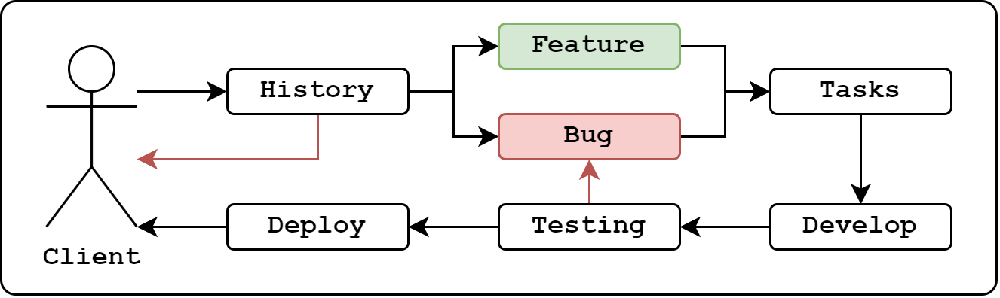
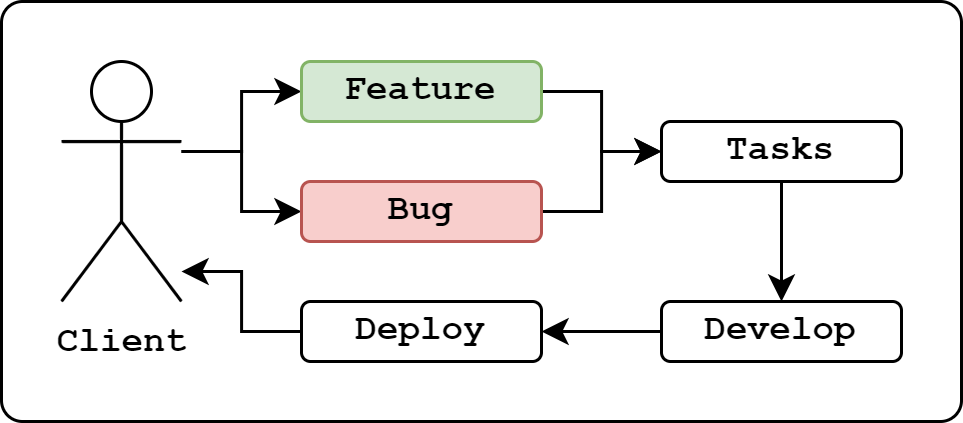
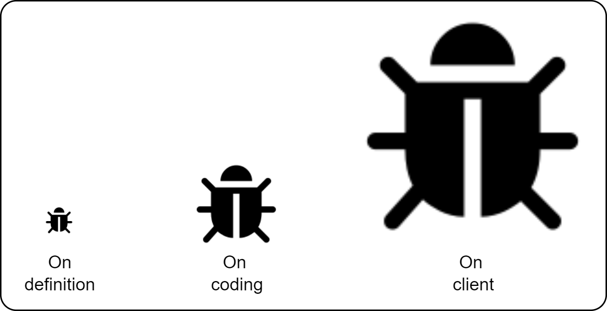
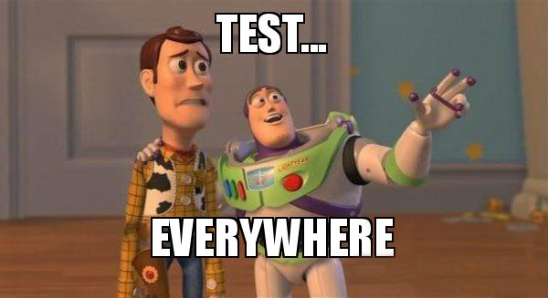
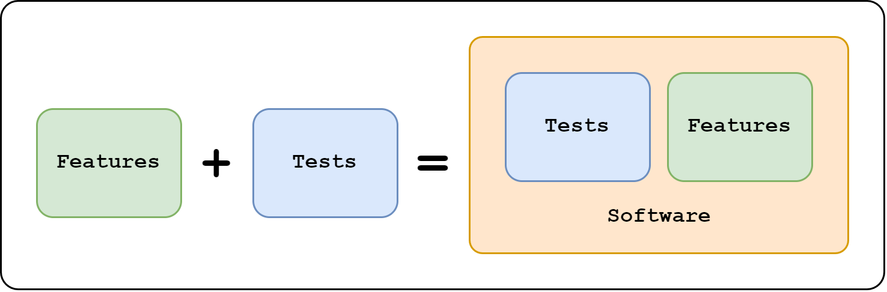
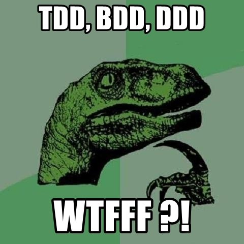
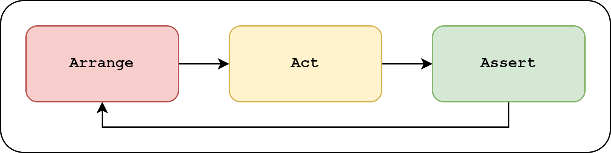

Fluxograma básico do processo ágil.

Antigo processo de desenvolvimento.
Garantia de qualidade e confiabilidade.
“Queremos o melhor pelo o menor custo!”
“Será que o que eu comprei realmente está me atendendo?”

Quanto mais rápido identificado o bug, menor preço.

Todo teste tem seu custo para ser criado.

Testes devem ser feitos com eficiência, inteligência e coerência.
Os comportamentos que “aquilo” se propôe a executar!
const model = {
async getById(id) { /* ... */ }
}
const service = {
async getById(id) {
const result = await model.getById(id);
if(!result) throw new Error('not found');
return result;
}
}
const service = {
async checkIsAdult(birthDate) {
const diff = new Date(Date.now() - birthDate.getTime());
const year = diff.getUTCFullYear();
const age = Math.abs(year - 1970);
return age;
}
}
const service = {
async checkImc(value) {
if(value < 18.5) return 'Under weight';
if(value < 25) return 'Normal';
if(value < 30) return 'Over weight';
if(value < 35) return 'Obese I';
if(value < 40) return 'Obese II';
return 'Obese III';
}
}
const connection = require('./connection'); // using mysql
const model = {
async getById(id) {
const sql = 'SELECT * FROM table WHERE id = ?';
const [[row]] = await connection.query(sql, [id]);
return row;
}
}
const service = {
buildRecoveryEmail(email) {
const link = `http://domain.com/recovery?email=${email}`;
let tmpl = '<html><head></head><body>';
tmpl += '<a href="${link}" target="_blank">Click to recover</a>';
tmpl += '</body></html>';
return tmpl;
}
}

“Mas eu nem sei testar ainda…”

O Padrão Triple A - Simples!
Principais
Outros